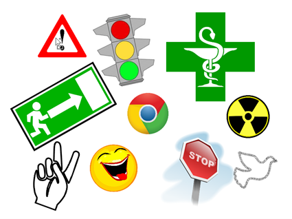

Si te has quedado con ganas
Todo lo de esta página es opcional y no se evalúa. Son herramientas y recursos que funcionan en el navegador, sin instalar nada y sin crear cuentas. Puedes usarlos cuando termines antes que tu equipo o en casa.
1. Modo avanzado de LearningML
En el menú ☰ del editor hay un interruptor «Avanzado». Al activarlo puedes:
- Elegir el algoritmo de aprendizaje en vez de dejar el que viene por defecto: una red neuronal o el KNN (que clasifica comparando con los ejemplos más parecidos que ya conoce).
- Ajustar los hiperparámetros (por ejemplo, cuántas veces repasa los datos).
- Ver la matriz de confusión: una tabla que te dice exactamente qué clase confunde el modelo con qué otra. Es la mejor herramienta para saber qué imágenes te faltan.
Reto: entrena tu conjunto de signos con los dos algoritmos y compara los resultados con las mismas imágenes de prueba. ¿Gana siempre el mismo?
2. Otras cosas que puede aprender tu modelo
El editor de LearningML no solo reconoce imágenes. Prueba las otras tres tarjetas:
| Tipo | Idea de proyecto |
|---|---|
| Texto | Un clasificador de mensajes amables / no amables, o de comentarios positivos / negativos. |
| Sonido | Distinguir palmadas de chasquidos, o tu voz de la de otra persona. |
| Números | Clasificar conjuntos de datos numéricos. Es como funcionan por dentro los otros tres. |
3. Juega con IA
| Recurso | Qué es |
|---|---|
| Quick, Draw! | Dibuja en 20 segundos y una red neuronal intenta adivinar qué es. Al terminar te enseña con qué dibujos de otras personas ha aprendido: verás su conjunto de datos. |
| Teachable Machine | Otra herramienta para entrenar modelos sin cuenta, de Google. Además de imágenes y sonidos reconoce posturas del cuerpo. Compárala con LearningML: ¿cuál te resulta más clara? |
| MENACE | La máquina de cerillas de la S6. Intenta ganarle 20 veces seguidas. |
| Moral Machine | Dilemas morales para coches autónomos, del MIT. En español. |

4. Cuida tus datos
| Recurso | Qué es |
|---|---|
| Tú decides en Internet | Portal de la Agencia Española de Protección de Datos con tus derechos explicados y qué hacer si algo va mal. |
| Privacidad (INCIBE) | Guías prácticas sobre huella digital, geolocalización y configuración de privacidad. |
| EraseEXIF | Además de ver los metadatos de una imagen, los borra, y todo dentro de tu navegador. Útil de verdad antes de compartir una foto. |
5. Lengua de signos
- DILSE, el diccionario de lengua de signos española de la Fundación CNSE: más de 10.000 signos en vídeo, gratis y sin registro.
- Spread the Sign: diccionario internacional; sirve para comparar cómo se signa la misma palabra en distintos países. Descubrirás que la lengua de signos no es universal.
Créditos y licencia
Unidad elaborada por el Departamento de Tecnología del IES El Majuelo.
Reutiliza y adapta textos e imágenes de los recursos educativos abiertos «Hola, ¿necesitas ayuda?» y «Nos comunicamos con la Lengua de Signos», de Antonio Jiménez Ruiz para la Consejería de Educación de la Junta de Andalucía (CC BY-NC-SA 4.0). En cumplimiento de la cláusula de «compartir igual», este material se publica con la misma licencia.
LearningML es una herramienta creada por Juan David Rodríguez García (learningml.org).